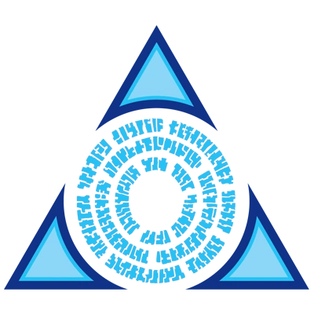
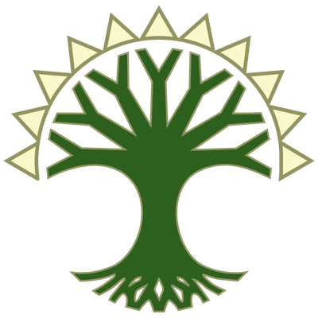
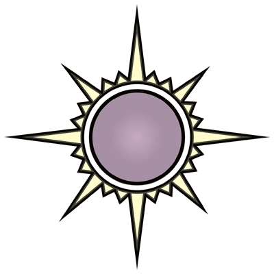
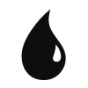

MTG Colors
Learn the names of every color combination
mtgcolors.quest
Combines Option 1's centered logo layout with Option 3's guild watermark background.
Uses the real logo from src/ui/logo.ts: conic-gradient spiral with five mana pip symbols in a pentagon.
Shown at full 1200x630 and at 600x315 thumbnail scale.




src/ui/logo.ts — a conic-gradient circle
(W gold -> U teal -> B purple -> R orange -> G green) masked by the spiral SVG path from images/spiral.svg.
The five mana pip symbols are positioned in a pentagon using the same cosine/sine offsets as the source.